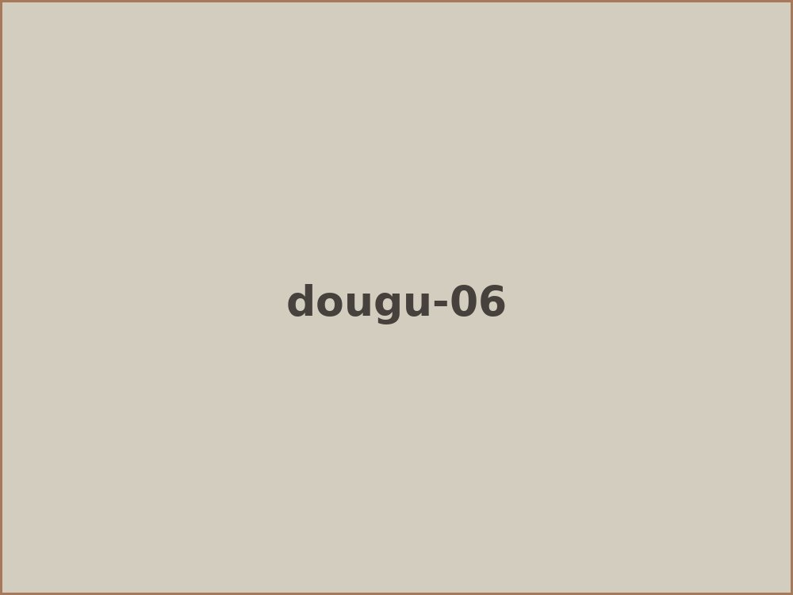
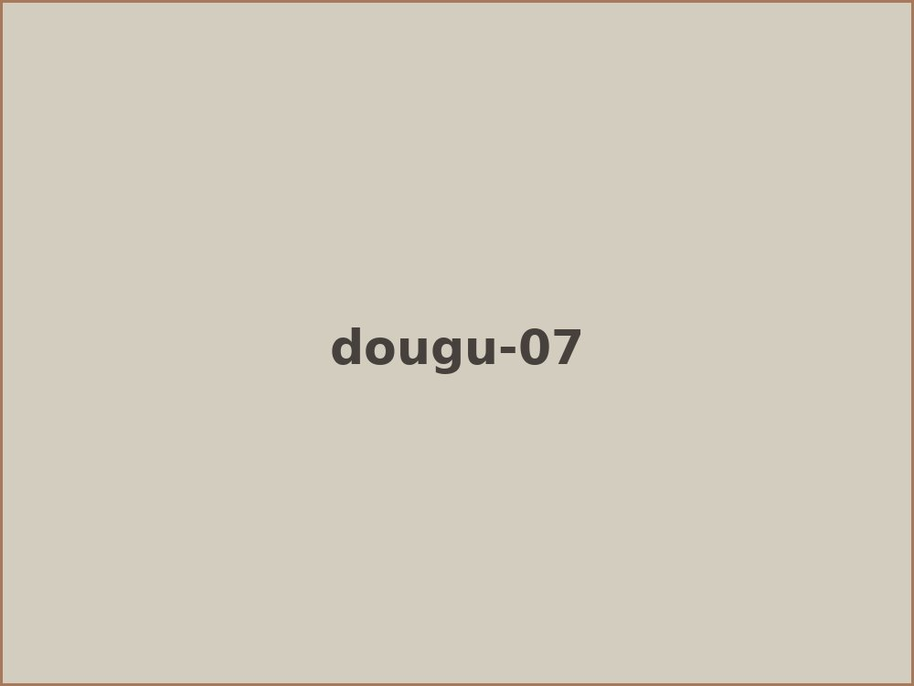
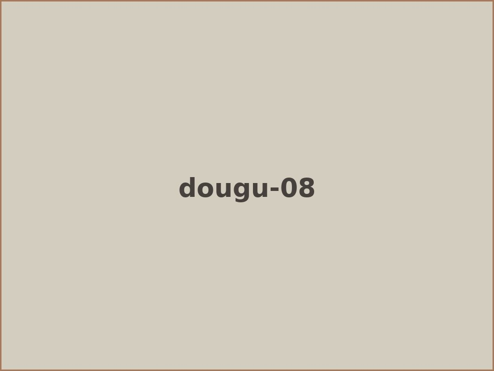

自分は主に、 機械を使わずに手彫りで ぽちぽち石を彫っています。 電動工具や機械を使って 彫った方が早いし 効率がいいことは 分かっているのですが 機械を使うのはケガをしそうで緊張するので あまり好きではないんですね。 たまに石彫用の道具屋さんに行くと たまたま居合わせた石屋さんに 「手彫りでやってるんですか？珍しいですね。」 と言われたこともあります。 どんな道具で彫っているかというと 鉄の先に「タンガロイ」という超硬合金が付いた石ノミで 焼入れをしなくても、先を卓上グラインダーで削るだけで 使えるようになっています。

ノミの頭は、しっかり焼き入れが出来てないので めくれてしまっています。 黒御影や小松石など 硬めの石はタンガロイのノミが便利ですが 大理石などの柔らかい石の場合は 鉄ノミでも十分彫ることが出来ます。
手で石を彫っていくと 石の表面にノミ跡が残ります。
ノミで彫った後は、「刃とんぼ」で細かくしていきます。 「びしゃん」という肉叩きのような道具でノミ跡を潰して 刃とんぼを使うのが普通ですが 自分はあまり使いません。
自分は刃とんぼで微妙な形を作っていくので、 刃とんぼを使用している時間が長いです。 その次は手磨き用の砥石で 荒い物から順番に細かくしていきます。



普通は全く傷が残らないように 磨いていく人が多いのですが、 自分はそこまで気にしないで たくさんの傷やノミ跡が残ったままで 光沢が出ないところ（６００番くらい）で終わりにします。 時々、石を彫るのはどんな道具で どうやって彫るんですか？ と聞かれるので ざっくりですが、まとめてみました。 自分の場合は こんな感じで作っています。 手彫りでも、もっと精密にキチンと作っている方は いらっしゃると思いますが 最低限の道具があれば ゆるゆると自分のスタイルで 石を彫ることもできます。 石彫に興味がある方、石を彫ってみたい方がいらしたら 試してみると楽しいかもしれませんね。